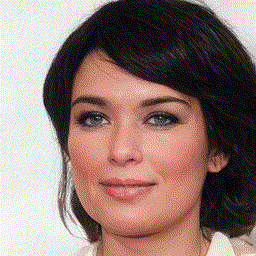
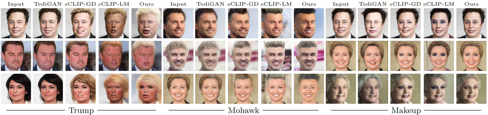

A Variety of Manipulations
StyleGAN2 FFHQ Directions

 A variety of manipulations on SyleGAN2 FFHQ model.
Rows 1-4 shows inverted real images and Rows 5-8 showsrandomly generated images.
A variety of manipulations on SyleGAN2 FFHQ model.
Rows 1-4 shows inverted real images and Rows 5-8 showsrandomly generated images.
The text prompt used for the manipulation is above each column.
Comparison with other methods
Comparison of our method with TediGAN, StyleCLIP-GD and StyleCLIP-LM methods.
BibTeX
@misc{kocasari2021stylemc,
title={StyleMC: Multi-Channel Based Fast Text-Guided Image Generation and Manipulation},
author={Umut Kocasarı and Alara Dirik and Mert Tiftikci and Pinar Yanardag},
year={2022}
}Acknowledgments
This publication has been produced benefiting from the 2232 International Fellowship for Outstanding Researchers Program of TUBITAK (Project No: 118c321). We also acknowledge the support of NVIDIA Corporation through the donation of the TITAN RTX GPU and GCP research credits from Google.